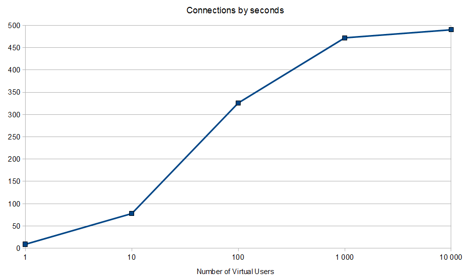

The Waarp FTP project is a proposal of a new fresh FTP server implementation, fully in Java according to the following RFC: RFC 959, RFC 775, RFC 2389, RFC 2428, RFC 3659. It includes also extra commands like XCRC, XMD5, XSHA1, INTERNALSHUTDOWN.
It is based mainly on the NETTY framework (NIO great framework support at http://netty.io and is tend to be really efficient, both in term of memory, threads and network bandwidth.
Bandwidth limitation can be configured both in store and retrieve, per session (although only one value is set by default, but it can be changed dynamically if needed) or globally to the server and of course with no limitation at all if wanted. Limitation should be enough to change the bandwidth behavior for instance depending on the time in the day, so as to allow to limit bandwidth usage when users are at work and in contrary to allow more speed when only batchs are running.
The specificity of this project is you can adapt this software to your particular needs by: changing the pre or post action on commands (not only transfer), changing the underlying representation of files and directories (for instance with database entries), using any particular authentication mechanism.
See global Waarp project at http://waarp.github.com/Waarp/and particular Waarp FTP project at http://github.com/WaarpFtp/
From version 1.0.3, Benchmarks were done on 2 Intel Xeon Blade servers in one Blade Center. Each Blade is 2 Xeon Dual Core 1.66 Ghz with 4 GB of memory with a 1 Gb lan connection, one using as client simulator, the other one as server. Clients were realized using the Apache Net Ftp Client library.
All tests were done using the IBM JDK 1.6.
The first benchmark is about only Control Connection. It computes how many connections by second WaarpFtp server can allow, starting from 1 virtual user up to 1000 virtual users.
The result is on a single 2-Xeon server, the WaarpFtp Server allows up to almost 500 connections/second.
The second benchmark is about transfer capacity on small files (1024 bytes only). Each user will try to transfer 100 times one file of 1024 bytes in one ways (store and retrieve), so that each virtual users will do 100 transfers operations sequentially. We start from 1 user up to 1000 users. We test both passive (client connect to the server for the data connection) and active (server connects to the client for the data connection) modes.
The result is on a single 2-Xeon server, the WaarpFtp Server allows up to 1400 RETRieve by second in active mode and up to 900 RETRieve by second in passive mode with 100 virtual users. The difference is mainly due to the need in passive mode to made a special synchronization since the data connection will be initiated by the client on a port defined on the server, but as this port could be used by many clients at the same time, there are some extra check to correctly assign this data connection to the correct control connection.
In STORe like transfers, the result are slower but due to the disk contentions.
In fact in RETRieve operations, the client does not store anything (it throws away the received bytes), while in STORe operations, the FTP server really stores the transmitted bytes on disk. So, on RETRieve, the FTP server reads many times the same file (so probably caching through system) and the client does nothing, while in STORe, the client reads once and the FTP server writes 100 times the same file sequentially.
The configuration on Blade is not efficient (RAID 1 on two simple SATA disks), so in the better case, we can have up to 2x480 Mbits in read (two disks in parallel) or up to 480 Mbits in write operations (two disks but concurrently) since those SATA disks are more or less around 60 MB/s.
Now add the point that those SATA disks are not ready for multiple concurrent access (1 access in write and 1 acces in read). So with 100 users, if write orders are really concurrent, there will be at most 4.8 Mbits per access in average.
For the 1KB file, the result (4 MBits) is therefore directly related to the hardware and not to the software since write orders arrives very quiclky since transfer is almost immediate. The same issue could be observed a bit on read part (RETRieve operations), but is less visible since files are on system cache and so are not suffering from concurrent read disk access.
Note that on this benchmarks, Bandwidth are in 0.01Mbits (10Kbits) for graphical reasons, which means that a value of 400 means 4 Mbits.

Note that on this benchmarks, Bandwidth are in 0.1Mbits (100Kbits) for graphical reasons, which means that a value of 400 means 40 Mbits.

Here, as the files is bigger (10 KB), the transfers are not so immediate when we have 100 Virtual Users (VU), therefore the STORe operations can sustained almost 40 Mbits, while RETRieve operations sustain almost 120 Mbits.
But you can notice that with 1000 VU, the results are going down for the STORe operations, since this time concurrent writings can occurs more frequently due to the number of clients (around 15 Mbits).
However, for RETRieve operations, the number of transfers is still around 1400 transfers/s and now around 120 Mbits.
The third benchmark is about the global bandwidth usage. Since with 100 users and 100 transfers in both ways we get the higher performance, we start from this set and increase the file size from 1024 bytes up to 1 024 000 bytes. The bandwitdh this time are in Mbits.
The result is on a single 2-Xeon server, the WaarpFtp Server allows to use up to 90% of the available bandwidth (here 0.9 Gb were used on a 1 Gb local network for RETRieve operations). Note that obviously the number of transfer/second is going down when the file size is going up. At 1024 bytes, we reached up to 1400 transfers/s.

Again we can see the difference between Passive and Active protocol, and the disk write contention effect on STORe operations (around 100 Mbits at most on write).
Finally, a benchmark on the subproject WaarpGatewayFtp gives up to 105 transfers and execution by second.